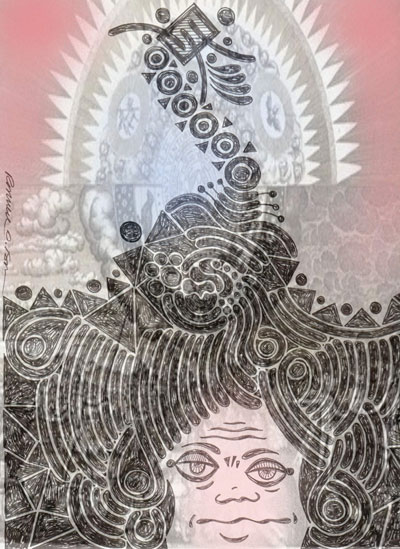
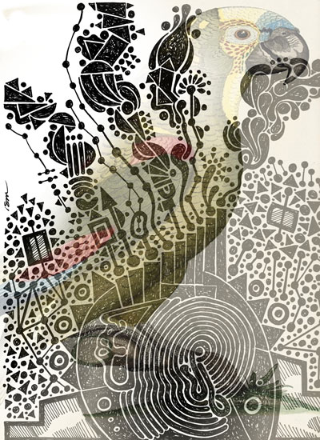
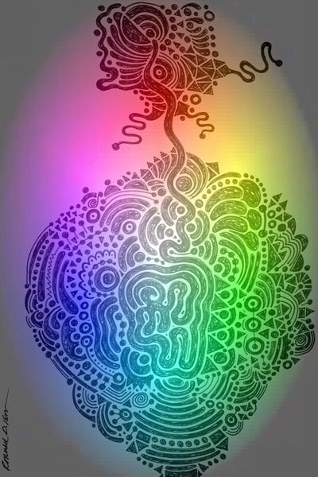
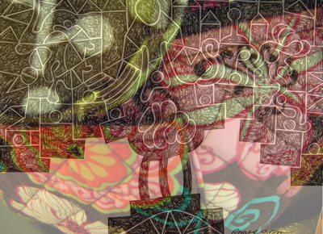
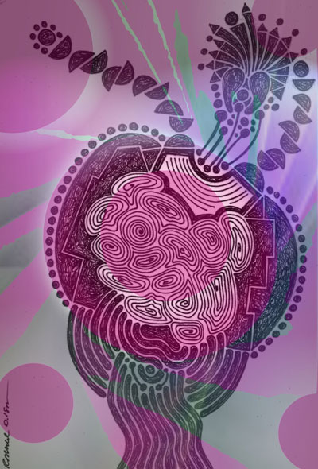
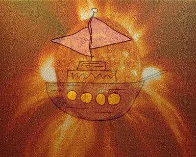

Jester-Knight
Literature
Film
Music
Visual Art
Tributes
Submissions
Links
Contact
Ronald Isom
Asemic symbolism (definition)
Asemic symbolism has no verbal sense, though it may have a clear contextual sense. Through its design, composition and symbolic content, asemic symbolism may evoke an understanding, meaning or intuition. Through its composition and symbolic content, asemic symbolism may provide an understanding of complex ideas. This form of art depends on the viewers knowledge of philosophy, art history, mathematics, religion, philosophy, physics, sociology, nature and other esoteric subjects for it to make sense, or it can be understood through aesthetic intuition.
Asemic symbolism is truly a product of the Internet. Search engines have made it possible to generate thousands of links for words, and images. It also provides a way to unify esoteric ideas in a spontaneous manner. The asemic symbolism process has five parts:
1. Creation of a spontaneous drawing (the genesis or nexus of all asemic symbolism; proceeding from natural feeling or native tendency without external constraint )
2. Manipulation of the drawing through the use of a computer (with image software)
3. Formation of a spontaneous title using Asemic Symbolic Divination a technologically advanced form of scrying.
4. Researching the title on the Internet to provide possible explanations or meanings of the drawing ( link the drawing title to as many sites as possible)
5. Publishing the manipulated drawing, title and links to a web site
The bi-product of this process is an acute awareness that everything in our universe is related. Much like the physics concept of a "theory of everything", asemic symbolism is rooted in the ancient idea of causality. Publishing on the Internet allows the asemic symbolic art work to grow in geometric proportions. Linking is the key to provide a self sustaining life to the art work.
Asemic symbolism is not an art movement. Movements have almost entirely disappeared in contemporary art where individualism and diversity prevail. It is however a creative process that utilizes the manipulation of materials to find or define unity in the known or unknown universe. An example of an asemic symbolic listing on the internet: http://metrogadfly.blogspot.com/
My art work is personal iconography. The imagery has been developed over fifty years. My vocabulary of icons enables me to generate hundreds of images without conscious effort. The ideas flow on the paper much like automatic writing. I generate the images in in sets of 10 to 20 and have produced several series of 100 or more. Many of my original works are photographed and the images are manipulated with Adobe illustrator or Photoshop.
Art (click image to view full size):

Curiosities of the Mind

Flight B

Heart of 4th Dimension A

In the Garden

Sensual Growth A

Ship